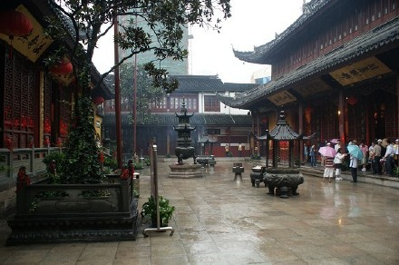
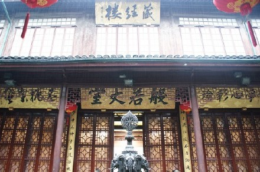
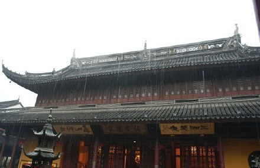

雨中玉佛寺清净又庄严！
很荣幸能够出席《弘一法师》开票会。

开票会地点在玉佛寺藏经楼。
饰演弘一法师的宋怀强老师。
小女子不才。
斗胆说下自己对于角色的理解，也非常幸运有这么多专业老师帮忙。
玉佛寺主持觉醒大师。
结束后，去了大雄宝殿拜了拜。

抽成丝的雨。
当得知要出演大型音乐剧《弘一法师》作为向祖国60华诞和世博献礼的时候，我是有点吓到的，因为我一直是唱流行的，音乐剧那种需要扎实演唱功底和丰富的表演激情，我担心我不能胜任。但在慢慢的和剧组的接触过程中，我了解到了弘一法师本人，为他的人生经历和人格魅力所吸引，弘一法师原名李叔同，我们最能熟悉的是长亭外古道边的《送别》是他写的，但是他所融会贯通的关于音乐、美术、教育，又岂止是我们所了解的。而晚年又看透浮华，成为一代高僧。渐渐的我越来越有野心，我一定要好好的参演这部音乐剧，不光是和佛祖结缘，也是对自己的一项挑战！
我饰演的角色，是晚清上海棋盘街天韵阁的名妓李苹香，因被狡童潘某所诱，堕入风尘。她琴棋书画样样精通，所以和李叔同沟通起来并不困难，有很多共同的话题。很巧的是，我的公司是环球天韵，名字一样，难道冥冥中早有注定？
这次是参加音乐剧《弘一法师》的开票会，地点在普陀区的玉佛寺，突然的下着雨，整个寺庙清净又庄严。见到了玉佛寺的主持觉醒大师，一看到他就觉得心里很安静。见到一群为社会做出贡献很伟大的人们，觉得自己好渺小。所以更要加油了，我相信那么多好的老师，前辈陪着我，我一定会努力演好，像弘一法师所说的：惜福，人在世上很渺小，人的福气很微薄，倘若不加爱惜，尽情浪费挥霍，更大的痛苦难逃脱。大师出家20多年，身边的遗物，居然只是一件补二百二十四个补丁的破僧衣。
而且这次玉佛寺的妙莲法师，和一百多个僧人都会参与演出。演出时间是：11月22日-26日，地点在上海大剧院。